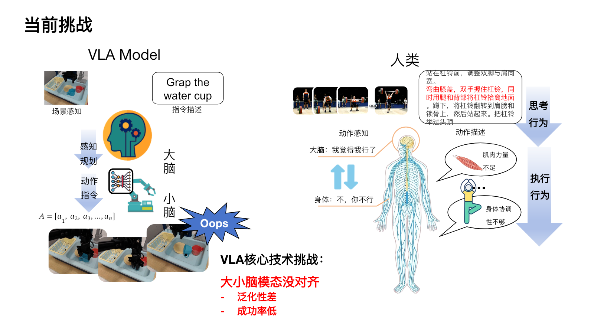
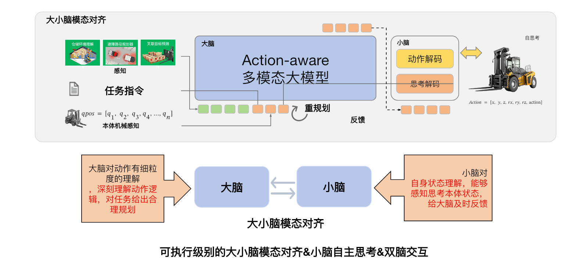

Deliberate Before Acting
在承诺动作之前保留候选、比较潜在结果，形成可解释的执行前审议。
HAI-3 / ACTION-AWARE VLA 2.0
HAI-3 将在 HAI-1 的执行前审议与 HAI-2 的状态自适应决策基础上，继续探索面向持续执行反馈的 VLA2.0 整体设计。公开内容正在整理中。
VLA2.0 / NEXT CAPABILITY TRANSITION
HAI-1 与 HAI-2 已形成独立研究工作；HAI-3/VLA2.0 将继续把执行前审议、状态自适应决策与真实机器人反馈连接为持续闭环。正式架构与验证材料将在准备完成后发布。
THE ACTION GAP
现有 VLA 的“大脑”可以感知场景、理解指令并规划动作，但真实机器人还需要“小脑”提供本体状态、身体协调与执行反馈。
CFG-Bench 用细粒度动作任务暴露了这类理解缺口；HAI-1 与 HAI-2 先处理执行前的候选比较和 decision state 选择，HAI-3 则把能力推进到持续执行中的反馈闭环。

ACTION-AWARE + BODY-AWARE DESIGN
VLA2.0 是 HAI-3 的整体设计方向：把现有焊接、装载机等工作放回同一条闭环，用 Action-aware 多模态大模型理解任务与动作逻辑，用本体感知小脑解释当前身体状态，再让执行反馈影响下一步行动。

FROM BENCHMARK TO CLOSED LOOP
在承诺动作之前保留候选、比较潜在结果，形成可解释的执行前审议。
根据 decision state、风险与证据充分度，学习何时直接行动、何时继续审议。
把动作理解、本体感知、执行验证和反馈重规划组织成持续运行的闭环。
将执行中的偏差、恢复与成功证据回流到数据引擎，并由 CFG-Bench 继续诊断能力缺口。
WELDING + LOADER
HAI-3/VLA2.0 不停留在抽象路线图。焊接与装载机提供两个明确场景，用于检验同一套闭环设计如何覆盖精细操作与移动作业，同时保留各自的本体约束和执行反馈。
面向高精度连续控制，将焊缝与熔池感知、轨迹执行、在线调整及质量反馈连接为闭环。
面向移动作业，将环境理解、路径与装载动作、本体状态及执行反馈纳入同一设计。